|
Klamath Relief Convoy, Boise, ID Stop By: Jeff Head, Thursday, August 16, 2001 My son Jared and I started the day early, leaving the house about 6 AM to set up signs. We had the signs all set up (8 of them) approaching the Idaho Center west of Boise, near Nampa, ID by 8 AM. We unloaded our donations, and just as we did a pick up truck from a local plumbing company arrived and unloaded quite a bit more. 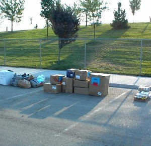 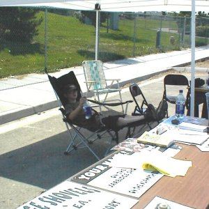 Early morning donations and Jared taking it easy waiting for the convoy. A number of individual contributors came by, increasng the size of the donated material , and then around 10 AM the convoy arrived with a semi tractor trailer and a couple of large pickups. One was driven by Bob St. Louis, the head of the Shovel Brigade out of Nevada. Bob was pulling the large bucket that had been created for the Bucket Brigade in Klamath. 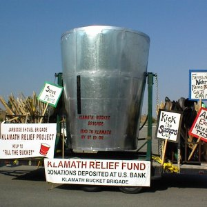 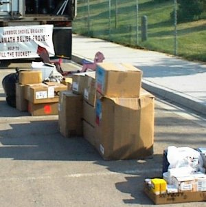 The "Bucket" pulled by Bob St. Louis and the donations grow. Along with the convoy, which arrived very punctually, as scheduled, the press crews came. We had the press there from all three major network affiliates in the Boise area and they interviewed us heavily. 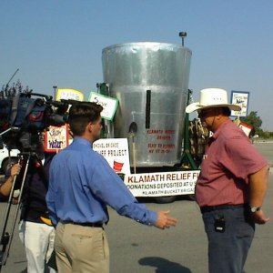 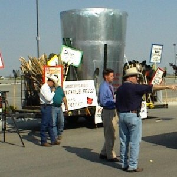 Rick Rogers and Jeff Head being interviewed by Channel 7 News.
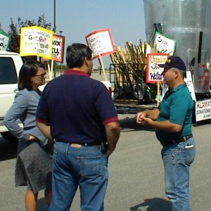 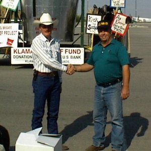 Bill Oedding being interviewd by Channel 12 News and Bill and Bob shake hands. KIZN 92.3 FM was one of the principle organizations that helped advertise the event. The Idaho Farm Bureau and Gem Supply Co-op of emmett also helped. Around 11 PM, Kevin and Brenda Me, the man-wife team that hosts their morning show for KIZN, and who had really advertised the event, arrived. The came with a van full of clothes from several local department stores and donated these to the Klamath farmers! 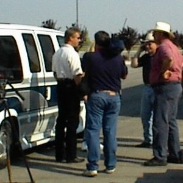 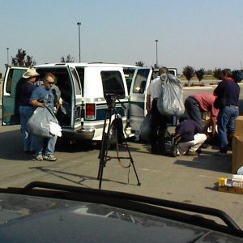 Kevin Me interviewed and their van full of clothes is unloaded.. Soon, the food, clothes, toys and implements were loaded into the trucks and it was time for the convoy to leave. We had several hundred pounds of clothes, food, toys, back to school items, etc. A local farming family posed by the bucket before it left. 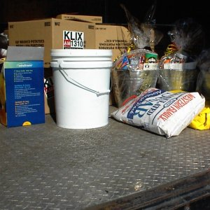 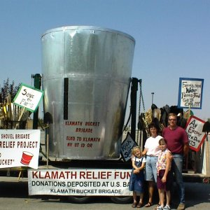 Food that had been loaded and a local farm family poses with the bucket. We never had more than 20-25 people there at one time, but we collected a lot of clothing, food and things for kids. Several hundred ponds worth of material. In addition, over in Emmett at the Gen Supply Co-op, several tons of hay were donated which will be auctioned off with the proceeds going to the Klamath Relief Fund. We also had some good dollar donation today too! Later this evening, we got GREAT coverage on the local news by the local affiliates. Both at 5 PM and 10 PM. 3-5 minute segments which were very much oriented towards the plight of the Klamath farmers and the warning that it could soon come to Idaho too. Tomorrow, Jared and I will drive over to Klamath after work (about 400 miles). We hope to arrive around midnight at the headgates and be there through the 21st when this Elko convoy and three others will converge on Klamath Falls to complete this phase of relief efforts for those beleagured farmers from their fellow citizens.
SIGN THE NATIONAL PETITION FOR THE KLAMATH BASIN CRISIS
CLICK BELOW FOR BOOKS/NOVELS OF INTEREST: 


[Please consider visiting these sites as well] The Attack on America Memorial Site - The Winning Iraqi Freedom Dedicatory Site
Copyright © 2001-2006 by Jeff Head, All Rights Reserved
|